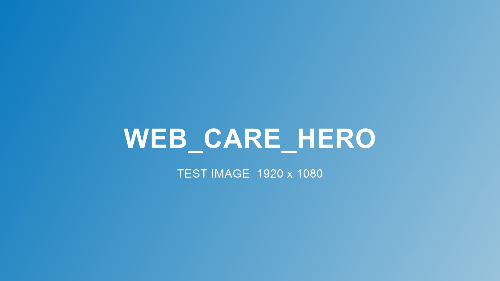

Supply continuity is a clinical outcome
A missed shipment is a missed dressing change, an unsensored week, a garment worn past its life. Our care management approach treats resupply as part of the care plan, because it is.

How we manage every patient relationship
How the CARE framework works
Coverage, confirmed
Benefits verified before the first shipment and re-verified when plans change, especially at January deductible resets.
Adherence, supported
Refill confirmations, renewal tracking and replacement schedules that keep patients on their prescribed cadence.
Responsiveness, guaranteed
Order changes, clinical updates and coverage questions resolved by phone with a real person.
Escalation, when it counts
Supply issues that touch clinical risk get flagged to the care team, not left in a queue.
What your case managers can hand off to us
- New-supplier transitions with zero shipment gaps.
- Prescription renewal coordination with the prescribing office.
- Seasonal continuity planning: holiday shipping windows, travel, plan-year changes.
- Cross-line consolidation when a patient needs supplies from multiple categories.
Worth knowing
Custom compression garments take 10–14 business days in production. Holiday shipping windows close in mid-December. Deductibles reset January 1. We plan around all three so your patients never feel them.
Put continuity on autopilot.
Talk to us about transitioning patients or coordinating a care program.
Call 888.244.6421